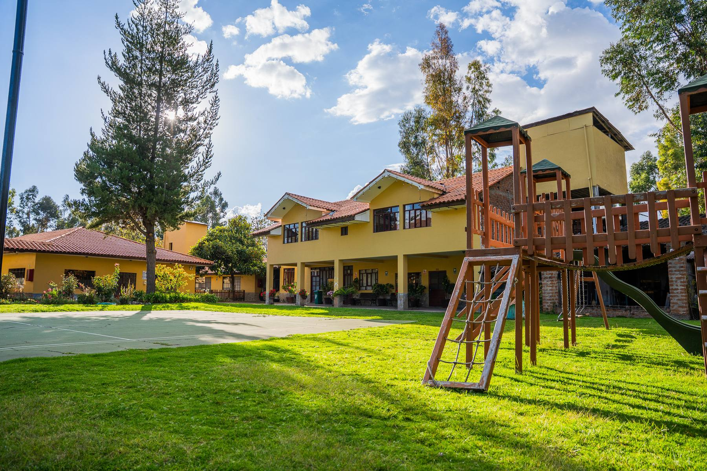
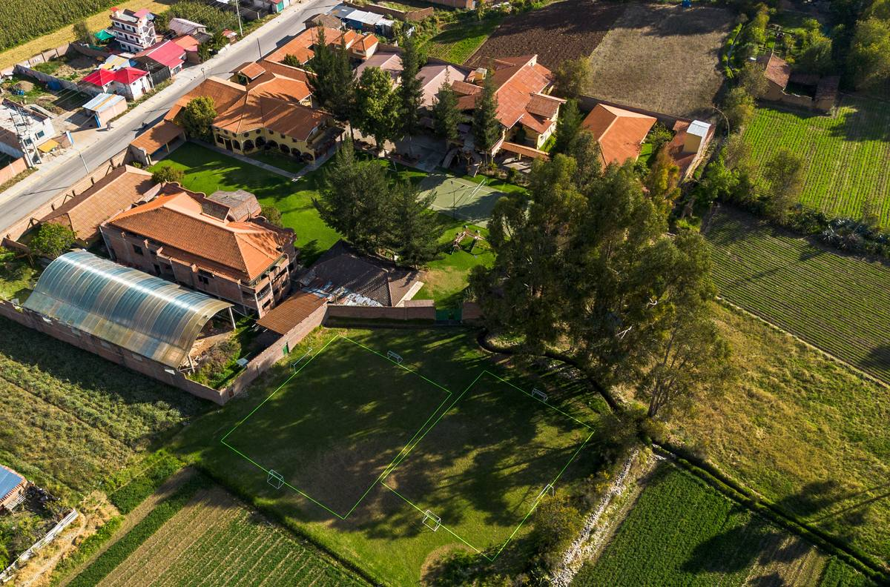
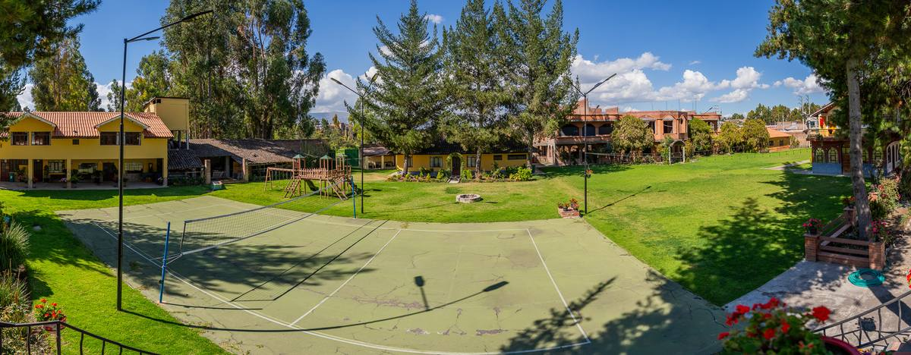
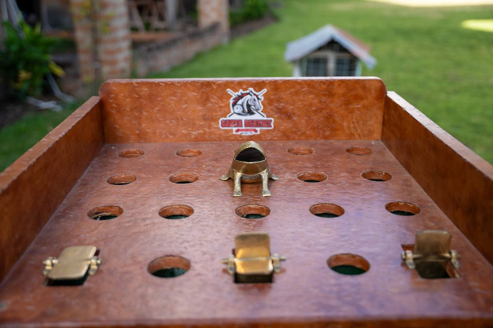
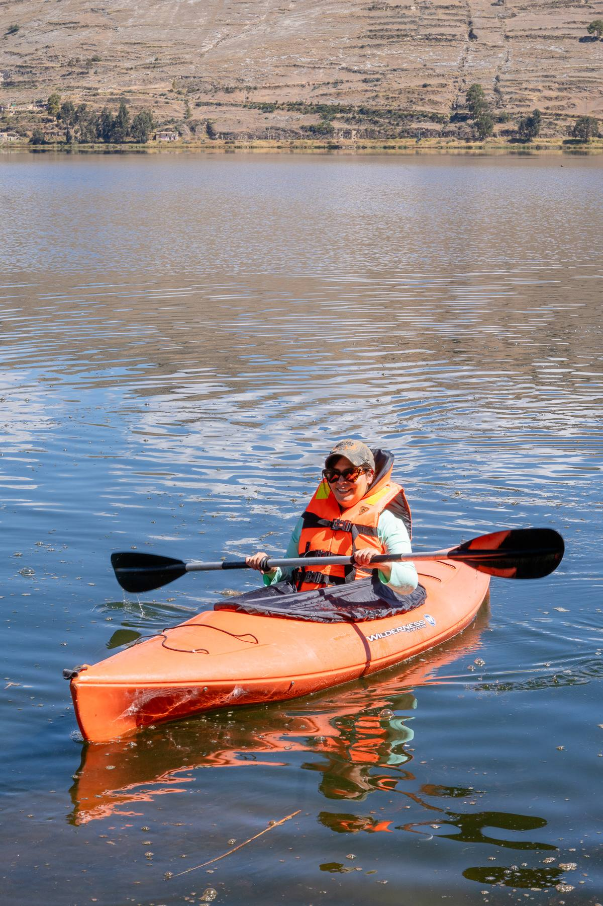
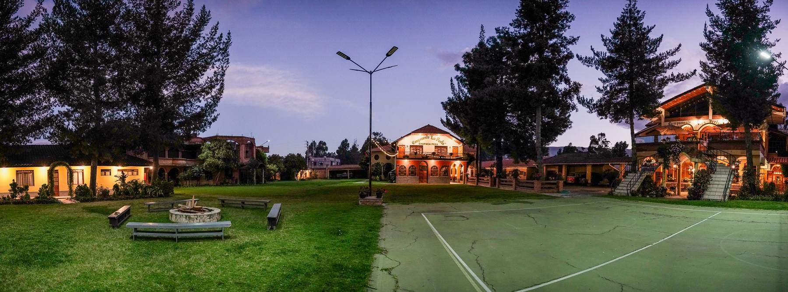

Deporte, jardines y diversión al aire libre
Canchas deportivas, juegos de mesa, áreas infantiles, espacio para fogatas y amplios jardines para desconectarse de verdad.

El espacio perfecto para desconectarse al aire libre
El recinto está diseñado alrededor de sus áreas verdes: jardines cuidados, campos de juego y espacios de entretenimiento que los huéspedes y visitantes pueden disfrutar libremente en un ambiente seguro.
Es el motivo por el cual muchas familias eligen La Perla para pasar el fin de semana, celebrar cumpleaños infantiles o realizar integraciones escolares y retiros de equipo.
Qué puede hacer durante su estadía

Cancha de fútbol y vóley
Espacios acondicionados para partidos entre huéspedes, campeonatos de integración y dinámicas grupales.

Juegos de mesa y recreación
Contamos con fulbito de mesa y juego de sapito tradicionales para momentos divertidos en familia o entre amigos.

Juegos recreativos para niños
Área infantil en campo abierto pensada para la diversión segura y el entretenimiento de los más pequeños.

Zonas de fogata y jardines
Espacios acondicionados para realizar fogatas nocturnas bajo las estrellas, acompañados de bancas y sombras entre árboles.
Experiencias al aire libre para compartir en familia y amigos
Desconéctate de la rutina y vive momentos llenos de energía con tu grupo favorito. Actividades deportivas y de aventura preparadas previa coordinación para garantizar diversión y seguridad.
Paseos en kayak
Una aventura acuática ideal para remar en equipo, relajarse y disfrutar del paisaje junto a tus amigos o familia.
Rutas en bicicleta
Paseos sobre dos ruedas por caminos campestres, ideales para explorar el entorno natural en grupo a tu propio ritmo.

Toda la magia del Valle del Mantaro a unos pasos
Lo mejor de dos mundos: el silencio reconfortante del campo y la cercanía inmediata a los íconos turísticos, la gastronomía y la artesanía viva de la región.
Puntos históricos
Recorre la Plaza de la Constitución, la Catedral y el Parque de la Identidad Wanka a minutos de tu estancia.
Aventura y paisajes
Visita la Laguna Ñahuinpuquio, la vista panorámica del Cerrito de la Libertad y las imponentes torres de arcilla de Torre Torre.
Cultura y tradición
Conecta con la historia en Wariwillka y descubre los talleres artesanales de Cochas, Hualhuas y San Jerónimo.

Un fin de semana sin apuro
Reserve con anticipación en feriados largos: son las fechas que primero se llenan.